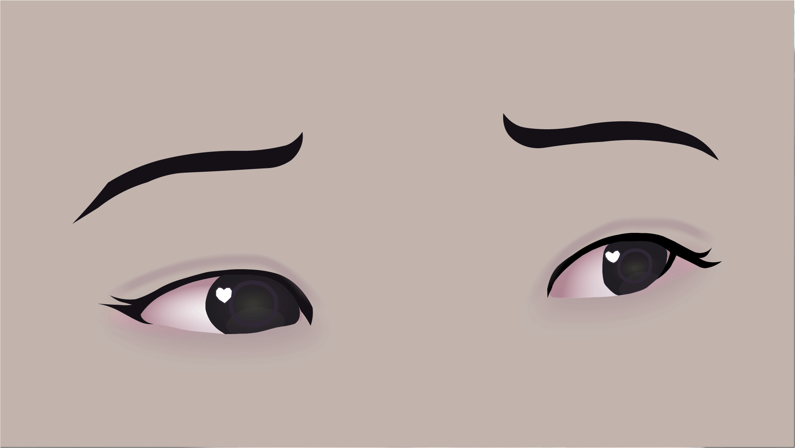

Homework Seven
Animation Eye GIF

For my first animated GIF project, I used the same eye image
from a previous homework assignment. I wanted to create a GIF
that would animate the eyes to make it so they were winking.
Initially, I was hoping to have both eyes blink, however, I
had some trouble with the second eye and scraped the idea as
a result. I individually edited each frame of the winking eye
in Adobe Illustrator, and compiled all of the frames into the
Timeline panel in Photoshop. I realized after this assignment
that animation was not for me, however I did enjoy the process
of creating the frames and seeing the final product come together.
Puppet Warp GIF
For my second animated GIF project, I wanted to create a floating
effect, using the Puppet Warp tool in Photoshop. I used a photo of
a character from a game that I liked, and removed the background from
the original photo. Using the Puppet Warp tool, I was able to move the
character's features (arms, legs, head, hair, etc.) in different frames,
in order to create the illusion of floating. I also added a simplistic
gradient background to make the overall animation more visuallu appealing.
This assignment was very fun to work on, and I definitely learned a lot
about the Puppet Warp tool and how to use it effectively. I still think that
I have a lot more to improve on when it comes to animation, but I am glad
that I got to experiment with it in this assignment.
Back to Homeworks Page
Back to Home Page